EG
321
321
Empire Granite · Stone Slab Inventory
Product Concept & Master Setup
ฉบับรวมเดียว (EG-321)
ฉบับรวมเดียว (EG-321)
จาก Odoo มาตรฐาน (Goods/Service/Combo) → ทำไมต้อง Custom → โครงสร้างสินค้าหิน (Material/Block/Slab/FG) → คู่มือ Setup จริงทีละระดับ พร้อมรูปจริงจากโรงงาน 11 ก.ย. จับคู่กับหน้าจอปัจจุบัน
1. Odoo Product พื้นฐาน
2. ทำไมต้อง Custom
3. โครงสร้างหิน (ภาพรวม)
4. Material/Block/Slab/FG จากรูปจริง
5. คู่มือ Setup ทีละระดับ
EMG-O · เอกสารหลักฉบับเดียวเรื่อง Product — แทนที่เอกสารเก่าทั้งหมด · 18 ก.ย. 2026
ส่วนที่ 1 — พื้นฐาน Odoo
Odoo แบ่งสินค้าเป็น 3 ประเภทมาตรฐาน
i
ก่อนพูดเรื่องหิน
ทุกระบบ ERP ต้องมี "แนวคิดสินค้า" เป็นฐานราก — Odoo มาให้ 3 แบบตายตัว ทุก Product ที่สร้างในระบบ (รวมถึง Slab/Block/FG ของหินด้วย) ต้องเลือก 1 ใน 3 นี้เสมอ ไม่มีทางเลือกที่ 4
📦
Goods (สินค้า)
จับต้องได้ มีสต็อกจริง นับจำนวนได้ ต้องผ่านคลัง/การจัดส่งจริง เช่น เก้าอี้ เสื้อผ้า หรือ — หินทุกชนิดในระบบนี้
🛠️
Service (บริการ)
ไม่มีตัวตนจับต้อง ไม่มีสต็อก ขายเป็นชั่วโมง/งาน เช่น ค่าแรงติดตั้ง ค่าออกแบบ ค่าที่ปรึกษา
🧩
Combo (ชุดรวม)
มัดรวมหลาย Product เข้าด้วยกันขายเป็นชุดราคาเดียว เช่น ชุดของขวัญ, Package โปรโมชัน
ข้อสรุปสำคัญ: Slab, Block, และ Finished Goods ของ EMG-O ทุกตัวคือ Goods ทั้งหมด — ไม่มีตัวไหนเป็น Service หรือ Combo เพราะทุกตัวจับต้องได้ มีสต็อกจริง ต้องส่งมอบจริง
ส่วนที่ 1 — พื้นฐาน Odoo
ของจริงในระบบ: ตรงไหนคือ "Goods" ของ Odoo
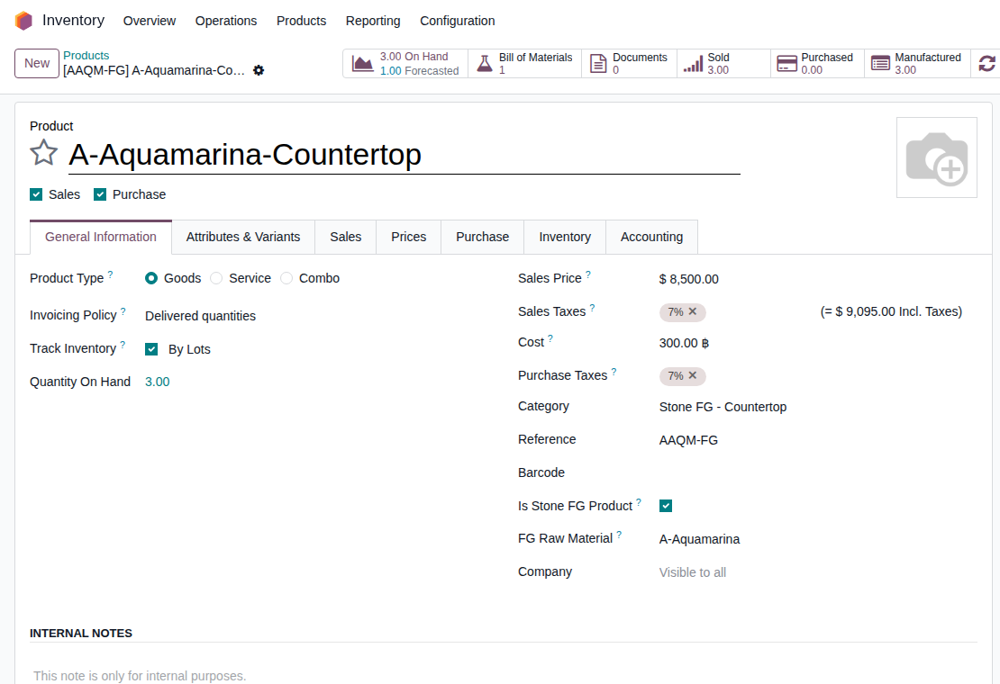
สังเกตมุมซ้ายบน: ทุก Product ในระบบ (นี่คือ Finished Good จริง "A-Aquamarina-Countertop") มีปุ่มเลือก Goods / Service / Combo ให้เห็นตรงๆ — หินทุกตัวติ๊กไว้ที่ Goods เสมอ ส่วน field พิเศษด้านล่าง ("Is Stone FG Product", "FG Raw Material") คือส่วนที่ EMG-O เพิ่มทับบน Goods มาตรฐานอีกที — รายละเอียดในส่วนที่ 4-5
ส่วนที่ 2 — ทำไมต้อง Custom
ถ้าใช้ Goods มาตรฐานตรงๆ (ไม่ custom อะไรเลย) จะเป็นแบบนี้
?
ลองสมมติ
สร้าง Product 1 ตัวชื่อ "หินอ่อน Carrara White" แบบ Goods ธรรมดา แล้วขายตามสต็อกที่มี
| คำถามจริงของธุรกิจหิน | Goods มาตรฐาน Odoo | ความจริงของหิน |
|---|---|---|
| ราคาต้นทุนเท่ากันทุกชิ้นไหม | ใช่ (สมมติเท่ากันเสมอ) | ไม่ — แต่ละก้อนซื้อมาคนละราคา คนละคุณภาพ |
| ขนาดเท่ากันทุกชิ้นไหม | ใช่ (SKU เดียว = ขนาดเดียว) | ไม่ — แผ่นที่ตัดจากก้อนเดียวกันยังหนา/กว้างไม่เท่ากันได้ |
| ต้องรู้ไหมว่าแผ่นนี้มาจากก้อนไหน | ไม่รองรับ | ต้องรู้ — ต้นทุน/สี/ลายหินอ้างอิงกลับไปที่ก้อนต้นทางเสมอ |
| ขายได้กี่แบบจากวัสดุเดียวกัน | 1 SKU = 1 แบบขาย | ขายได้ทั้งก้อน / เป็นแผ่น / แปรรูปเป็นสินค้าสำเร็จ |
สรุป: Odoo Goods มาตรฐานออกแบบมาสำหรับสินค้าที่ "เหมือนกันทุกชิ้น" (เช่น เสื้อ Size M สีขาว) — หินธรรมชาติแต่ละก้อนไม่เหมือนกันเลยสักก้อน จึงต้อง custom เพิ่มบนฐาน Goods เดิม ไม่ใช่เปลี่ยนไปใช้ประเภทอื่น
ส่วนที่ 2 — ทำไมต้อง Custom
ทางออก: Goods 3 ตัวที่ผูกกันด้วย "Material"
แทนที่จะสร้าง Goods 1 ตัวต่อชนิดหิน ระบบสร้าง Goods 3 ตัวต่อชนิดหิน 1 ชนิด (Slab Product / Block Product / Finished Good Product — ยังเป็น Goods ของ Odoo ปกติทุกตัว) แล้วผูกทั้ง 3 เข้าด้วยกันผ่าน record กลางตัวใหม่ที่ EMG-O สร้างเพิ่ม เรียกว่า Material
Material
(record ใหม่ที่ custom เพิ่ม)
(record ใหม่ที่ custom เพิ่ม)
→
Slab Product
(Goods)
(Goods)
Block Product
(Goods)
(Goods)
FG Product
(Goods)
(Goods)
บวกกลไกเสริมอีก 2 ชั้น ที่ Odoo ไม่มีให้: (1) Block record ที่เก็บต้นทุน/ขนาด/คุณภาพเฉพาะก้อนนั้นก้อนเดียว (2) Slab record ที่ผูกย้อนกลับไปหา Block ต้นทางเสมอ ทำให้ตรวจสอบย้อนกลับได้ทุกแผ่นว่ามาจากก้อนไหน ต้นทุนเท่าไหร่จริง
ส่วนที่ 3 — โครงสร้างสินค้าหิน (ภาพรวม)
จุดเริ่มต้น: โครงสร้างที่ลูกค้าคิดไว้เอง
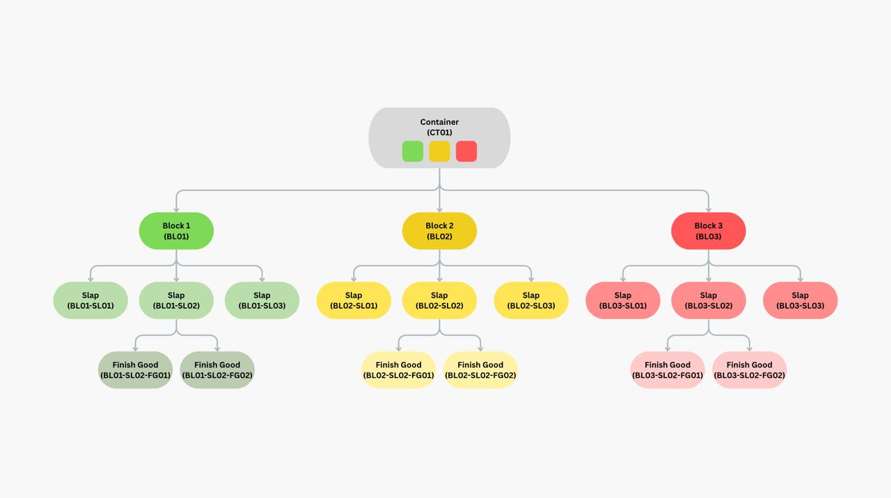
ไดอะแกรมต้นฉบับจากลูกค้า: Container → Block → Slab → Finish Good — แนวคิดนี้ตรงกับโครงสร้างจริงในระบบเกือบทั้งหมด ต่างกันแค่คำเรียกบางคำ (สไลด์ถัดไป)
ส่วนที่ 3 — โครงสร้างสินค้าหิน (ภาพรวม)
โครงสร้างจริงในระบบวันนี้: Material → Block → Slab (+ FG แยกอีกชั้น)
| ระดับ | คืออะไร | เทียบกับไดอะแกรมลูกค้า |
|---|---|---|
| 1. Material | ชนิดหิน (เช่น A-Aquamarina) — ระดับ master กลาง ไม่ผูกกับก้อน/แผ่นใดแผ่นหนึ่ง เป็น record ที่ EMG-O เพิ่มขึ้นมาคุมทั้งสาย | ไม่ปรากฏในไดอะแกรมเดิม (ลูกค้าเริ่มที่ Container) — เป็นชั้นที่ต้องเพิ่มเพื่อผูก Slab/Block/FG 3 Goods เข้าด้วยกัน |
| 2. Block | ก้อนหินดิบที่ซื้อเข้ามาจริง 1 ก้อน — มีต้นทุน/CBM/ความหนาของตัวเอง | = "Block" ตรงตัว (และ = "Container" ถ้านับก้อนเดียวในกล่องเดียว) |
| 3. Slab | แผ่นที่ตัดออกจาก Block 1 แผ่น — ขนาดเฉพาะแผ่นนั้น ผูกย้อนกลับไปหา Block เสมอ | = "Slab" ตรงตัว |
| 4. Finished Good (FG) | สินค้าสำเร็จรูปที่แปรรูปจากแผ่น (เช่น Countertop, เจดีย์บัว) พร้อมส่งมอบลูกค้า | = "Finish Good" ตรงตัว |
ศัพท์ที่ต้องรู้ (สำคัญ): ในโค้ดระบบ Block ยังใช้ชื่อ model เดิมว่า Bundle (เปลี่ยนคำที่ใช้คุยกับลูกค้า/หน้าจอ เป็น "Block" ตั้งแต่ 16 ส.ค. 2026 แต่ไม่ได้แก้ชื่อในโค้ด) — Block กับ Bundle คือ record เดียวกัน ไม่ใช่ 2 ชั้นซ้อนกัน ถ้าเห็นคำว่า Bundle ที่ไหนในระบบเก่า ให้เข้าใจว่าคือ Block
ส่วนที่ 3 — โครงสร้างสินค้าหิน (ภาพรวม)
Block / Slab / FG คือ 3 "จุดขาย" ของแนวคิด EG-321
EG
เอกสารที่เกี่ยวข้อง — ไม่พูดซ้ำในนี้
โครงสร้าง Block/Slab/FG 3 ระดับนี้ — เมื่อมองจากมุม "ขายได้ตรงไหนบ้าง" จะตรงกับ 3 จุดขายของแนวคิด EG-321 (Block = จุดขาย 1, Slab = จุดขาย 2, FG = จุดขาย 3) บวกกับ 2 สวิตช์อิสระ (Project/BOQ) ที่แปะกับจุดขายไหนก็ได้
Block
จุดขาย 1
จุดขาย 1
→
Slab
จุดขาย 2
จุดขาย 2
→
FG
จุดขาย 3
จุดขาย 3
เรื่อง "ขายยังไง / ใครซื้อจุดไหนได้บ้าง" ดูรายละเอียดเต็มที่เอกสาร "แนวคิด EG-321 — 3 จุดขาย + 2 สวิตช์ + 1 Production Line" (หมวดภาพรวมโครงการ) — เอกสารนี้โฟกัสเฉพาะเรื่อง Product เอง: มันคืออะไร และ setup ยังไง
ส่วนที่ 4 — รายละเอียดแต่ละระดับ จากรูปจริง
ระดับที่ 1: Material — ชนิดหิน
รูปจริงจากโรงงาน (Visit 11 ก.ย. 2026)
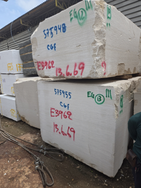
กองก้อนหินดิบในโกดัง — แต่ละกองคือหิน "ชนิดเดียวกัน" 1 ชนิด เช่น หินอ่อนสีขาวลายเทาแบบหนึ่ง นี่คือสิ่งที่ระบบเรียกว่า 1 Material record
หน้าจอปัจจุบัน — Material Form
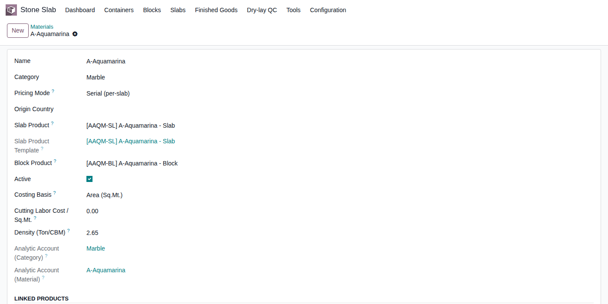
ตัวอย่างจริง "A-Aquamarina" — Category Marble, Pricing Mode Serial (per-slab), Density 2.65 Ton/CBM
สิ่งที่ Material เก็บ: ชื่อชนิดหิน, หมวดหมู่ (Marble/Granite/Quartzite), Pricing Mode (Serial หรือ Lot), ความหนาแน่น, ต้นทุนค่าแรงตัด/ตร.ม. — ไม่ผูกกับก้อนใดก้อนหนึ่ง เป็น master กลางที่ Slab/Block/FG Product ทั้ง 3 ตัวอ้างอิงกลับมา
ส่วนที่ 4 — รายละเอียดแต่ละระดับ จากรูปจริง
ระดับที่ 2: Block — ก้อนหินดิบที่ซื้อเข้ามาจริง
รูปจริงจากโรงงาน
ก้อนหินดิบ 2 ก้อน — สังเกตตัวเลข/รหัสที่เขียนด้วยมือบนก้อน (เช่น "E3962") คือรหัสอ้างอิงจากหน้างานจริง ก่อนจะถูกบันทึกเข้าระบบเป็น Block Code (เช่น BLK-26-0001)
หน้าจอปัจจุบัน — Block Form
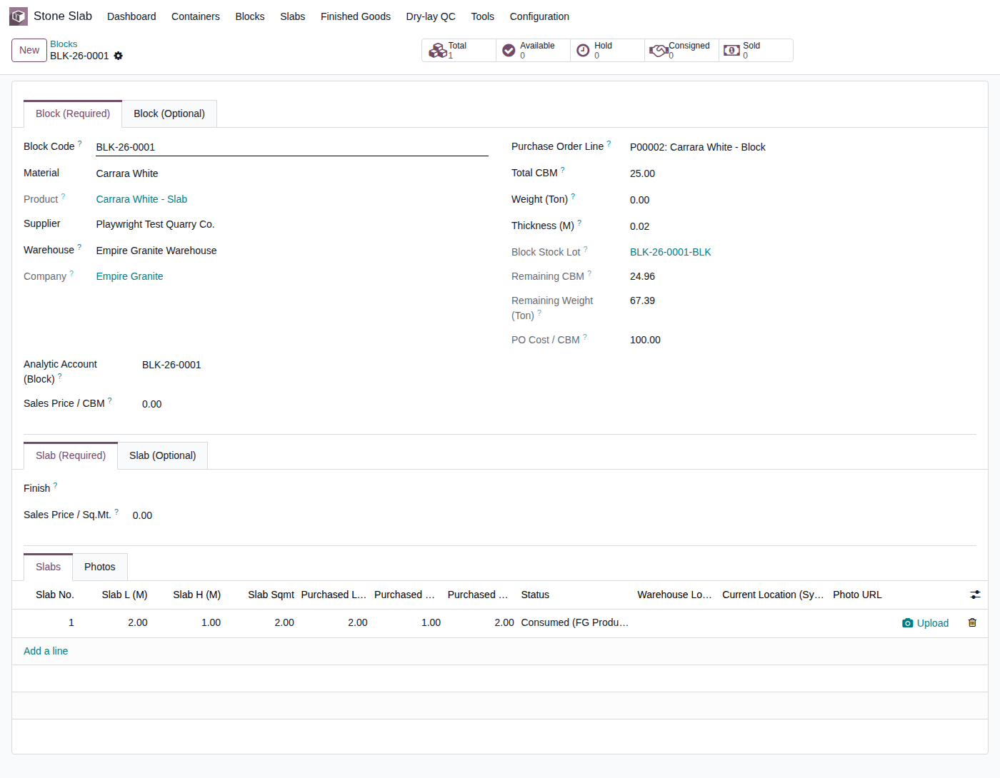
ตัวอย่างจริง BLK-26-0001 (Carrara White) — Total CBM 25.00, PO Cost/CBM 100.00, มีแท็บ Slab (Required/Optional) ย่อยด้านล่างเก็บรายการแผ่นที่ตัดได้จากก้อนนี้
สิ่งที่ Block เก็บ: Block Code (รหัสอัตโนมัติ), ก้อนไหนซื้อจาก PO ใบไหน, CBM/น้ำหนักรวม, ความหนา, ต้นทุนต่อ CBM — ทุกค่าเป็น ค่าเฉพาะก้อนนั้นก้อนเดียว ก้อนข้างๆ ที่เป็นหินชนิดเดียวกันก็มีต้นทุน/CBM ของตัวเองแยกกันคนละค่า
ส่วนที่ 4 — รายละเอียดแต่ละระดับ จากรูปจริง
ระดับที่ 3: Slab (ก) — ขั้นตอนตัดจาก Block
รูปจริงจากโรงงาน
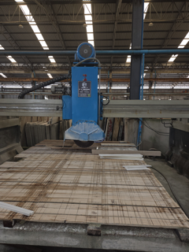
Bridge Saw กำลังตัดแผ่นหินให้ได้ขนาดที่ต้องการ — 1 Block ตัดได้หลาย Slab โดยแต่ละแผ่นขนาดไม่จำเป็นต้องเท่ากันเป๊ะ
ในระบบ
ตารางแท็บ "Slabs" ในฟอร์ม Block (ด้านล่างของสไลด์ก่อนหน้า) — แต่ละแถวคือ 1 Slab record ที่เกิดจากการตัด พร้อม Slab L/H ที่วัดได้จริง
ข้อสำคัญ: Slab ส่วนใหญ่ไม่ได้ตั้งค่าด้วยมือ — เกิดขึ้นเองจากกระบวนการตัด Block จริง (มี Manufacturing Order คุมอยู่เบื้องหลัง) ยกเว้นกรณีซื้อ Slab สำเร็จรูปเข้ามาตรงๆ (ไม่ผ่าน Block) ซึ่งต้อง set cost เองเป็นกรณีพิเศษ
ส่วนที่ 4 — รายละเอียดแต่ละระดับ จากรูปจริง
ระดับที่ 3: Slab (ข) — แผ่นสำเร็จ พร้อมขาย
รูปจริงจากโรงงาน
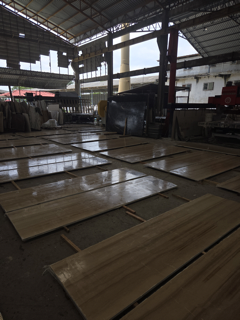
แผ่นหินขัดเงาเสร็จเรียงรอจำหน่าย — แต่ละแผ่นมีหมายเลขกำกับของตัวเอง (Serial Number) ตรวจสอบย้อนกลับได้ว่ามาจาก Block ก้อนไหน
หน้าจอปัจจุบัน — Slab Form
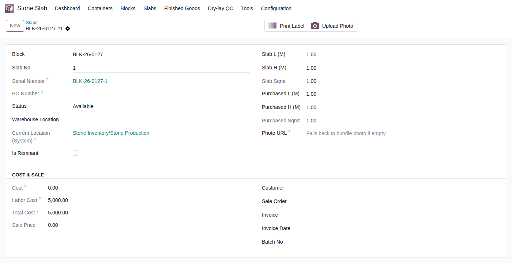
ตัวอย่างจริง BLK-26-0127 #1 — Serial Number BLK-26-0127-1, Status Available, Total Cost 5,000.00 (ต้นทุน+ค่าแรง)
สิ่งที่ Slab เก็บ: ขนาดจริงที่วัดได้ (L/H/Sqmt) เทียบกับขนาดที่สั่งตัด, Serial Number เฉพาะแผ่น, สถานะ (Available/Hold/Consigned/Sold), ต้นทุน+ค่าแรงของแผ่นนั้น, ตำแหน่งจัดเก็บปัจจุบัน — คือหน่วยขายจริงของจุดขาย Slab
ส่วนที่ 4 — รายละเอียดแต่ละระดับ จากรูปจริง
ระดับที่ 4: Finished Goods (FG) — สินค้าสำเร็จรูป
รูปจริงจากโรงงาน

งานแกะสลักสั่งทำพิเศษ (เจดีย์บัว/เสา) — ตัวอย่างงาน FG แบบ Custom ที่ไม่ใช่สินค้ามาตรฐานสำเร็จรูปธรรมดา
หน้าจอปัจจุบัน — FG Product Form
ตัวอย่างจริง A-Aquamarina-Countertop — Product Type = Goods, Track by Lots, Cost 300.00, มี custom field "Is Stone FG Product" + "FG Raw Material" ผูกกลับไปหา Material
2 แบบของ FG: (1) Standard — สินค้าสูตรตายตัว เช่น Countertop ขนาดมาตรฐาน ผลิตซ้ำได้เรื่อยๆ (2) Custom — งานสั่งทำเฉพาะชิ้น เช่น เจดีย์บัว/ซุ้มบัว แต่ละงาน spec ไม่เหมือนกัน ใช้ "Custom Product กลาง" ตัวเดียวแทนการสร้าง Product ใหม่ทุกงาน (รายละเอียด setup ส่วนที่ 5)
ส่วนที่ 5 — คู่มือ Setup จริง
ภาพรวม: ใคร Setup อะไร เมื่อไหร่
| ระดับ | วิธี Setup | ทำเมื่อไหร่ |
|---|---|---|
| Material | Manual — Quick Material Setup Wizard | ครั้งเดียวตอนเริ่มขายหินชนิดใหม่ |
| Block | Manual — ตอนรับก้อนเข้าคลัง (จาก PO) | ทุกครั้งที่ซื้อก้อนหินเข้ามาจริง |
| Slab | Auto — เกิดจากการตัด Block | ทุกครั้งที่มีคำสั่งตัด (ยกเว้นซื้อ Slab ตรง) |
| Finished Good | Manual — Wizard (ตอนสร้าง Material ใหม่ หรือเพิ่มทีหลังก็ได้) | ครั้งเดียวต่อสินค้าสำเร็จรูป 1 แบบ |
มีแค่ 2 จุดที่ทีมงานต้อง Setup ด้วยมือจริงๆ: Material (ผ่าน Wizard) และ Block (ตอนรับของเข้าคลัง) — Slab เกิดขึ้นเองจากกระบวนการตัด ไม่ต้องตั้งค่าเอง
ส่วนที่ 5 — Setup: Material
Setup Material — เปิด Quick Material Setup Wizard
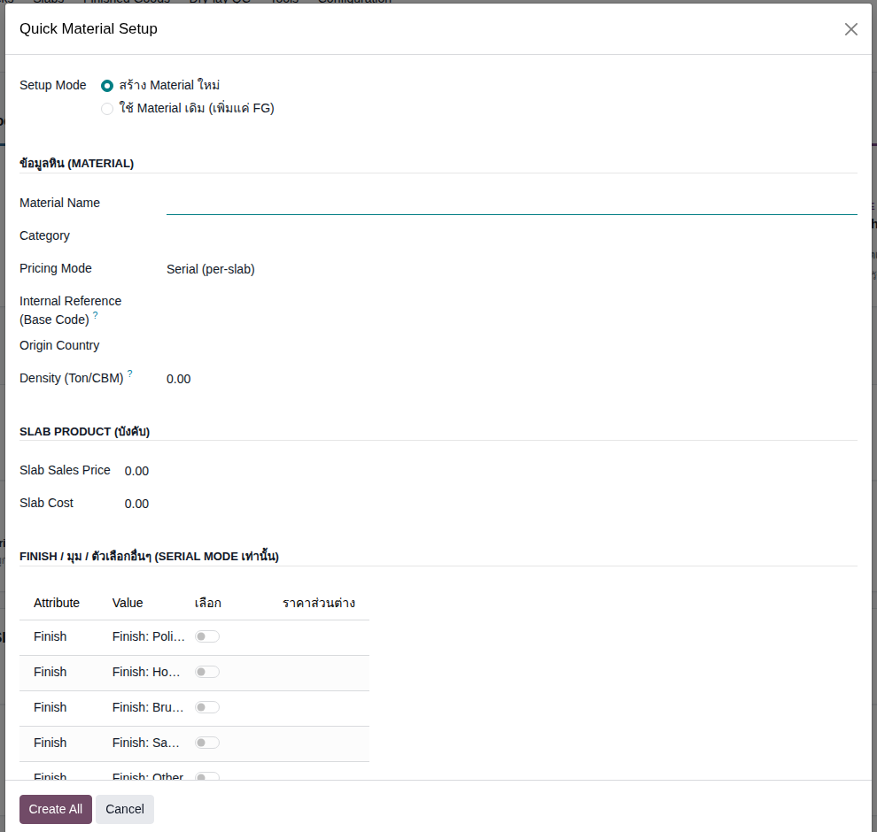
เมนู: Stone Slab → Tools → Quick Material Setup
| Field | ความหมาย |
|---|---|
| Setup Mode | เลือก "สร้าง Material ใหม่" (มี Slab/Block ให้ตั้งค่าด้วย) หรือ "ใช้ Material เดิม (เพิ่มแค่ FG)" |
| Material Name | ชื่อชนิดหิน เช่น "A-Aquamarina" |
| Category | Marble / Granite / Quartzite ฯลฯ |
| Pricing Mode | Serial (per-slab) = ตั้งราคา/track ทีละแผ่น เหมาะกับหินราคาสูง | Lot (aggregate) = track รวมเป็นกอง เหมาะกับหินราคาถูกที่ตัดเยอะ |
| Internal Reference | รหัสฐาน (Base Code) ใช้ auto-generate รหัส Slab/Block Product ต่อ |
| Density (Ton/CBM) | ความหนาแน่น — ใช้คำนวณน้ำหนักย้อนกลับจาก CBM อัตโนมัติ |
ส่วนที่ 5 — Setup: Material
Setup Material — Slab Product, Finish/มุม, Block & FG (ตัวเลือก)
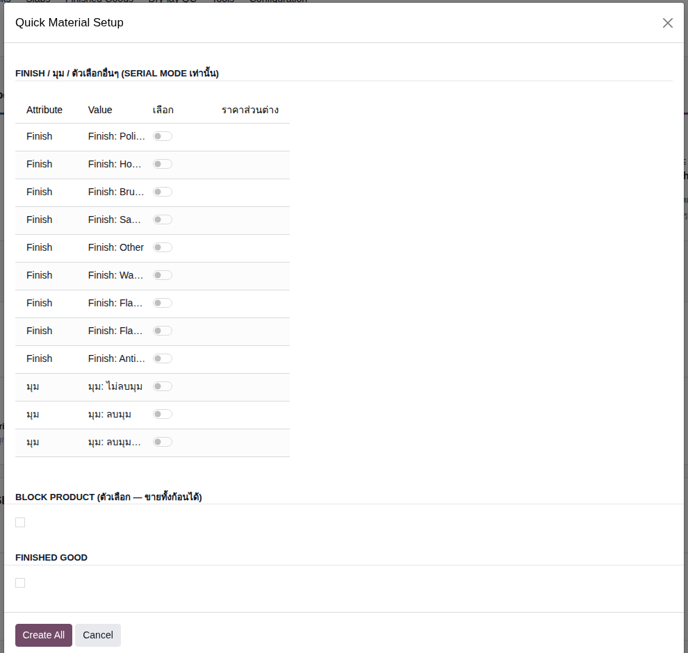
| ส่วน | ความหมาย |
|---|---|
| Slab Product บังคับ | Slab Sales Price / Slab Cost — ราคาตั้งต้นของแผ่น (แก้ทีหลังต่อแผ่นได้) |
| Finish / มุม Serial mode เท่านั้น | ตัวเลือกผิวหน้า (Polished/Honed/Brushed ฯลฯ) และมุม (ไม่ลบมุม/ลบมุม/ลบมุม+โค้ง) พร้อมราคาส่วนต่างต่อตัวเลือก — เปิดใช้เฉพาะโหมด Serial |
| Block Product ตัวเลือก | ติ๊กถ้าหินชนิดนี้ขายทั้งก้อนได้ด้วย (ไม่ใช่ทุกชนิดต้องขายทั้งก้อน) |
| Finished Good ตัวเลือก | ติ๊กถ้าต้องการสร้างสินค้าสำเร็จรูปพร้อมกันเลย — หรือข้ามไปทำทีหลังก็ได้ (ดูสไลด์ Setup FG) |
กด "Create All" ครั้งเดียว ระบบสร้าง Material + Slab Product + (Block Product ถ้าติ๊ก) + (FG Product ถ้าติ๊ก) + Analytic Account ที่เกี่ยวข้องให้พร้อมกันทั้งหมด ไม่ต้องไปสร้างทีละตัวเอง
ส่วนที่ 5 — Setup: Material
ตัวอย่างจริง: กรอก Wizard สำหรับ "A-Aquamarina"
| Field | ค่าที่กรอกจริง |
|---|---|
| Material Name | A-Aquamarina |
| Category | Marble |
| Pricing Mode | Serial (per-slab) |
| Density | 2.65 Ton/CBM |
| Block Product | ✓ ติ๊ก (ขายทั้งก้อนได้) |
| Finished Good | ✓ ติ๊ก — FG Product Name: "A-Aquamarina-Countertop" |
ผลลัพธ์หลังกด Create All: ระบบสร้างให้อัตโนมัติ 3 Product พร้อมกัน —
[AAQM-SL] A-Aquamarina - Slab, [AAQM-BL] A-Aquamarina - Block, [AAQM-FG] A-Aquamarina-Countertop (ดูผลจริงในหน้าจอ Material Form สไลด์ระดับ Material ก่อนหน้า) — รหัสหน้า [ ] มาจาก Internal Reference ที่กรอกไว้ส่วนที่ 5 — Setup: Block
Setup Block — เกิดจากการรับของเข้าคลังจริง ไม่ใช่ Wizard
!
ต่างจาก Material
Block ไม่มี Wizard ของตัวเอง — เกิดขึ้นตอนรับก้อนหินเข้าคลังจริง ผ่านปุ่มลัด "สร้าง Block" จาก PO ที่ยืนยันแล้ว (หรือสร้างตรงจากเมนู Blocks ก็ได้ถ้ายังไม่มี PO)
| Field สำคัญ | ความหมาย |
|---|---|
| Block Code | รหัสอัตโนมัติ (เช่น BLK-26-0001) — ใช้แทนเลขที่เขียนด้วยมือบนก้อนจริงหน้างาน |
| Material | เลือกจาก Material ที่ตั้งไว้แล้ว (ต้อง Setup Material ก่อนเสมอ) |
| Purchase Order Line | ผูกกลับไปหา PO บรรทัดที่ซื้อก้อนนี้เข้ามา — ใช้คำนวณ Landed Cost ย้อนกลับ |
| Total CBM / Thickness | ปริมาตรและความหนาของก้อนนี้ (ค่าเดียวทั้งก้อน — ถ้าต้องการ 2 ความหนา ต้องสร้าง 2 Block แยกจากก้อนตั้งต้นเดียวกัน) |
| PO Cost / CBM | ต้นทุนต่อหน่วยปริมาตร คำนวณจากราคา PO จริง — เฉพาะก้อนนี้ก้อนเดียว |
ดูหน้าจอเต็มของ Block Form ได้ในสไลด์ "ระดับที่ 2: Block" ด้านบน (BLK-26-0001 ตัวอย่างจริง)
ส่วนที่ 5 — Setup: Slab
Setup Slab — ไม่ต้อง Setup เอง เกิดจากการตัดจริง
ข่าวดี: ระดับ Slab ไม่มีขั้นตอน "setup" ให้ทีมงานทำเอง — เกิดขึ้นอัตโนมัติทุกครั้งที่มีการตัด Block จริงผ่าน Manufacturing Order แต่ละแผ่นที่ตัดได้จะกลายเป็น 1 Slab record ทันที พร้อม Serial Number ของตัวเอง
| Field ที่ควรรู้ (ดูอัตโนมัติ ไม่ต้องกรอกเอง) | ความหมาย |
|---|---|
| Slab L/H (M) vs Purchased L/H | ขนาดที่วัดได้จริงหลังตัด เทียบกับขนาดที่วางแผนไว้ตอนสั่งตัด — ใช้คำนวณ Yield% |
| Serial Number | รหัสเฉพาะแผ่น auto-generate จาก Block Code + ลำดับ (เช่น BLK-26-0127-1) |
| Cost / Labor Cost | ต้นทุนวัสดุ (จากสัดส่วน CBM ของ Block) + ค่าแรงตัด (จาก Material) รวมเป็น Total Cost |
ข้อยกเว้น: กรณีซื้อ Slab สำเร็จรูปเข้ามาตรงๆ (ไม่ผ่าน Block) ต้องกำหนดต้นทุนเองเป็นกรณีพิเศษ เพราะไม่มี Block ต้นทางให้อ้างอิงต้นทุนอัตโนมัติ
ส่วนที่ 5 — Setup: Finished Good
Setup FG — วิธีที่ 1: พร้อมกับสร้าง Material ใหม่
1
เมื่อไหร่ใช้วิธีนี้
รู้อยู่แล้วตั้งแต่แรกว่าหินชนิดใหม่นี้จะทำสินค้าสำเร็จรูปด้วย — ติ๊ก "Finished Good" ในขั้นตอน Setup Material เลย (ย้อนดูสไลด์ 15)
| Field | ความหมาย |
|---|---|
| FG Category | หมวดหมู่บัญชี/รายงานของสินค้าสำเร็จรูป เช่น "Stone FG - Countertop" |
| FG Product Name | ชื่อสินค้าสำเร็จรูป เช่น "A-Aquamarina-Countertop" |
| FG Sales Price / FG Cost | ราคาขาย/ต้นทุนตั้งต้น — แก้ไขทีหลังได้ที่ Product Form โดยตรง |
วิธีนี้สร้าง Slab + Block (ถ้าติ๊ก) + FG พร้อมกันในขั้นตอนเดียว — เหมาะกับตอนเริ่มขายหินชนิดใหม่ที่วางแผนทำสินค้าสำเร็จรูปไว้แต่แรก
ส่วนที่ 5 — Setup: Finished Good
Setup FG — วิธีที่ 2: เพิ่มให้ Material เดิมที่มีอยู่แล้ว
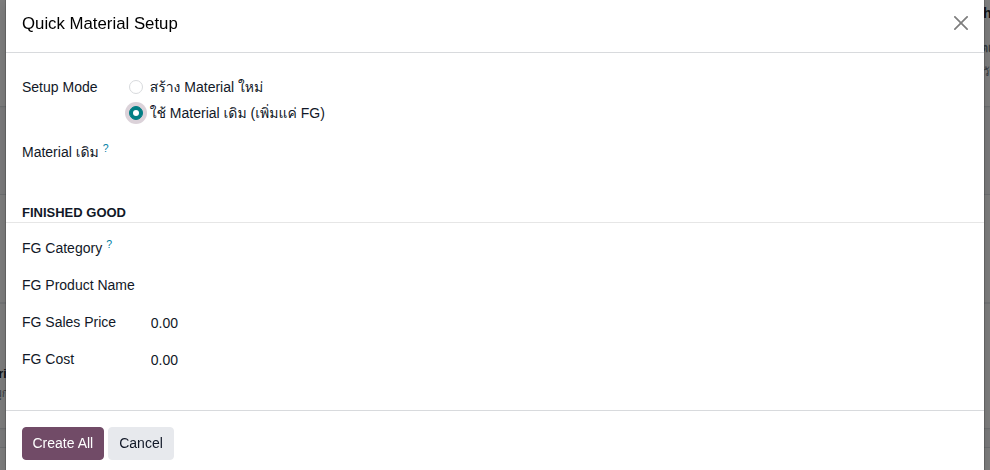
2
เมื่อไหร่ใช้วิธีนี้
Material มีอยู่แล้ว (ขาย Slab/Block ปกติมานาน) แต่เพิ่งมีความต้องการทำสินค้าสำเร็จรูปแบบใหม่ทีหลัง — เช่น ลูกค้าสั่ง Custom FG ชิ้นใหม่จากหินที่มีอยู่แล้ว
สำหรับงาน Custom (เจดีย์บัว/ซุ้มบัว ฯลฯ): ใช้ "Custom Product กลาง" ตัวเดียวแทนการสร้าง FG ใหม่ทุกงาน (ตามนโยบาย A2) — spec เฉพาะของแต่ละงานไปอยู่ที่ระดับ BOM ต่อใบสั่งขาย ไม่ใช่สร้าง Product ใหม่ทุกครั้ง
สรุป
สรุปทั้งหมดในหน้าเดียว
| ระดับ | Odoo Type | เก็บข้อมูลอะไร | Setup ยังไง |
|---|---|---|---|
| Material | — (record กลาง custom) | ชนิดหิน, Pricing Mode, Density | Manual — Wizard |
| Block | Goods | ก้อนดิบ 1 ก้อน, CBM, ต้นทุนเฉพาะก้อน | Manual — ตอนรับเข้าคลัง |
| Slab | Goods | แผ่นเฉพาะ, ขนาดจริง, สถานะขาย | Auto — จากการตัด |
| Finished Good | Goods | สินค้าสำเร็จรูป พร้อมส่งมอบ | Manual — Wizard (2 วิธี) |
จำสั้นๆ: Material = แบบ, Block = ก้อนจริง, Slab = แผ่นจริง, FG = สินค้าสำเร็จจริง — ทุกระดับยกเว้น Material เป็น Goods มาตรฐานของ Odoo ที่ EMG-O เสริมกลไก custom ทับไว้ ไม่ได้สร้างประเภทสินค้าใหม่ขึ้นมาเอง
ปิดท้าย
เอกสารนี้คือฉบับหลักเรื่อง Product — แทนที่เอกสารเก่าทั้งหมด
เอกสารนี้รวมและแทนที่: "โครงสร้างสินค้าหิน & วิธีจัดการบนระบบ", "Block คืออะไร — โครงสร้างและส่วนที่ Custom", และบท "4 ประเภทสินค้า/โหมดการขาย" ในคู่มือฉบับเต็ม — เอกสารเดิมทั้ง 3 ย้ายไป Archived พร้อม link กลับมาที่นี่
ดูเพิ่มเติมได้ที่
- แนวคิด EG-321 — เรื่องการ "ขาย" 3 จุดขาย + 2 สวิตช์ (ไม่ใช่เรื่อง Product setup)
- EG-321 Production Line — รายละเอียดสายการผลิตจริง, Work Center, Dry-lay QC
- Test Cases: Product/Material Setup (QA) — 12 test case เดินทดสอบ Setup จริงทีละขั้น
- Test Cases: Product Master & Sales (QA) — 81 test case ครอบคลุม edge case/security